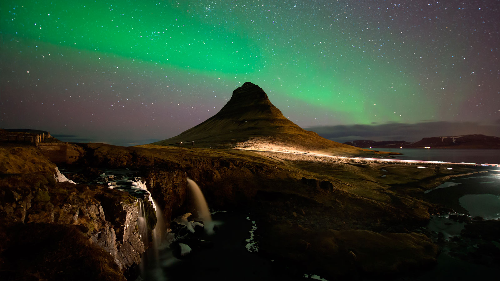

About Me
Hello! My name is Jordan, and I'm currently an apprentice software engineer. I'm 25 years old, and am a father of two amazing children.
You can find out more in my experience page, but a short summary of my work experience and interests would be that I have a passion for safety. I am attracted to roles and projects that contribute to the protection of users, and have spent the last few years working in trust and safety positions at large tech companies in order to help remove bad actors and ensure the safety of those platforms.
Interests
In my free time, I enjoy traveling and road tripping with my family, seeing nature, and watching movies/playing video games with my wife (and one day hopefully my kids). When it comes to movies, I love Marvel (of course), but I'm also really interested in anything with good cinematography.
As far as traveling goes, I've never left the United States. While I've seen a lot of beautiful places here in the US, and still have lots more to see, I'm excited to one day travel outside of the US and see nature in other parts of the world.
Motivation
As I mentioned before, I just recently became a father! My son, the oldest, was born in 2021, and his little sister a year later in 2022. Becoming a father has wildly changed my goals in life. Before my kids came around, I didn't mind taking on the overnight shifts and sleeping all day or working long hours that would have me at work 80+ hours a week. Driving to the office wasn't a problem, and I was more than happy to be in management leading a team.

Now that I have my children though, I want to be able to spend more time with my family. My experience now as a software engineer has been amazing for my work life balance. The flexibility of working towards a goal instead of working set hours has been a life saver. Being able to finish a task and step away to make lunch for the family and pick right back up when I'm done is a miracle. Putting the kids down for a nap and being able to jump into my work for the next day, or having something I can work on during middle of the night feedings has helped me to be not only a more active parent, but also a more productive worker.
Goals
A goal I have for my career in software engineering would be to be on a team that handles cyber security. With so much of our lives now relying on technology, I want to be able to help protect my children and the next generation from cyber attacks that might endanger their safety or identities. The scale isn't the most important thing to me, whether it's security for a social media app where they post pictures of their lives, or maybe on a broader scale like a government position protecting from infrastucture attacks, I'd like to know my work helped to make people safer.